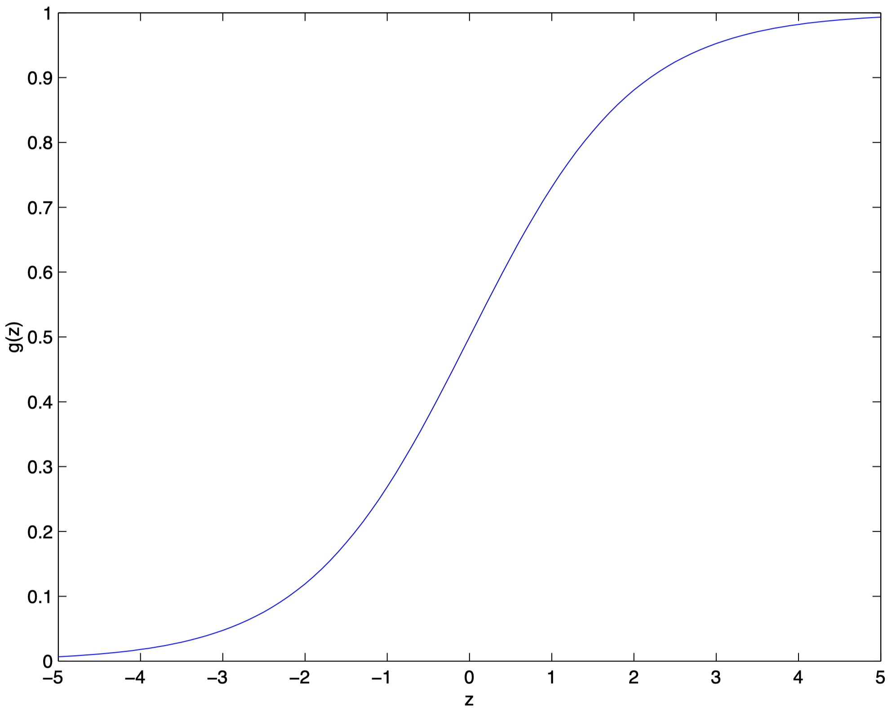
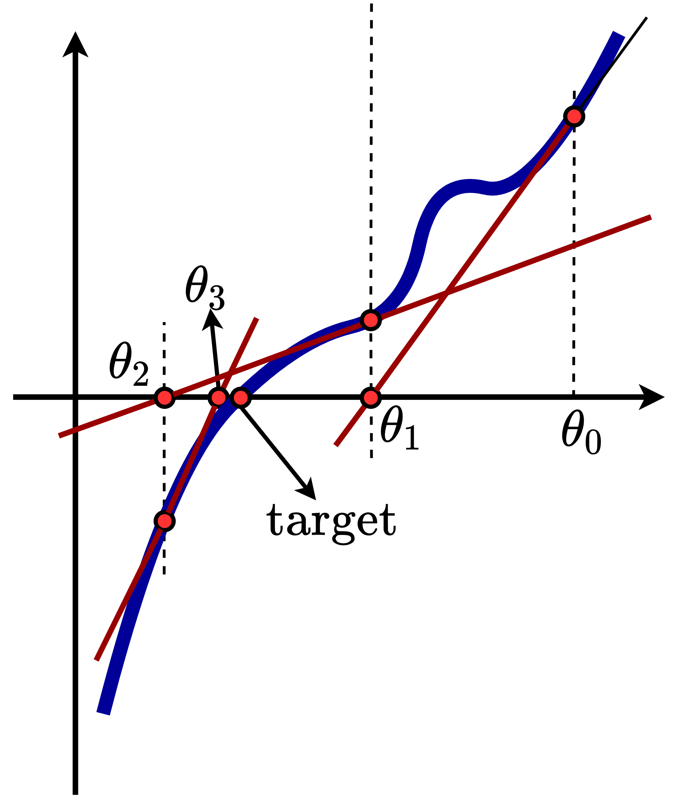
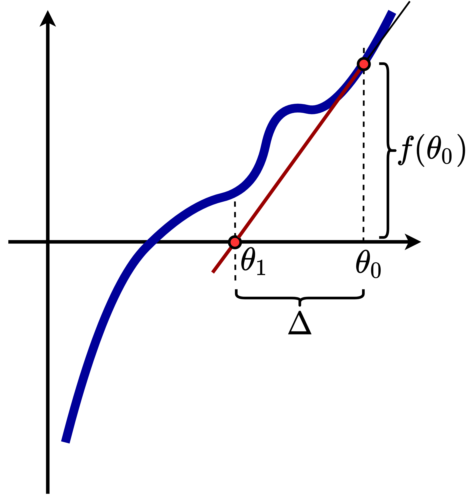

在上一篇文章中，我们介绍了基于最大似然来分析 Machine Learning 定义的 Loss Function 的本质的思路，总结来说，这个思路可以抽象为如下四步:
-
首先，我们需要定义出 Hypothesis 的形式;
在 Linear Regression 的例子中，我们定义出了 $h_{\Theta}(X^{(i)}) = \hat{Y^{(i)}} = \Theta^{T}X^{(i)}$
-
然后，基于把 Hypothesis 的输入特征 $X_{\text{h}}^{(i)}$ 和这份输入特征对应的标签 $Y_{\text{h}}^{(i)}$ 视为随机变量的思路，我们需要定义出这两个随机变量满足的分布，通常表达为条件概率分布 $p(Y_{\text{h}}^{(i)}|X_{\text{h}}^{(i)};\Theta)$，并且我们需要把上面定义出来的 Hypothesis 的形式放入该分布的表达式中;
在 Linear Regression 的例子中，我们定义出了 $p(Y_{\text{h}}^{(i)}|X_{\text{h}}^{(i)};\Theta) = \frac{1}{\sqrt{2\pi}\sigma} \cdot \exp(-\frac{(Y_{\text{h}}^{(i)}-\Theta^TX_{\text{h}}^{(i)})^2}{2\sigma^2})$
-
基于上面定义出来的分布表达式，通过代入 Training Set 提供的 Samples，我们可以得到似然函数 $\mathcal{L}(\Theta)$;
在 Linear Regression 的例子中，我们定义出了
$$\mathcal{L}(\Theta) = p(Y_{\text{h}}=Y|X_{\text{h}}=X;\Theta) =\prod_{i=0}^{m-1} \frac{1}{\sqrt{2\pi}\sigma} \cdot \exp(-\frac{(Y^{(i)}-\Theta^TX^{(i)})^2}{2\sigma^2})$$
-
通过基于 Gradient Ascent/Desent 等的求解器，以最大似然值/最小损失值为目标，求解出参数值。
本文我们将讨论我们在 Machine Learning 中见识到的第一个分类算法 —— 逻辑回归，我们下文将采用上面展示的四个步骤对逻辑回归算法的流程进行分析。
上文讨论的 Linear Regression 问题中，Hypothesis 输出的 $h_{\Theta}(X^{(i)}) = \hat{Y^{(i)}} = \Theta^{T}X^{(i)}$ 预测值是一个连续值。在分类问题中，我们的输出是离散值，这里我们以 二元分类 (Binary Classification) 这种简单的情况进行考虑。
定义 Hypothesis
对于二元分类问题，Training Set 的标签 $Y^{(i)}$ 有两种情况: $\{0,1\}$。我们可以把 Hypothesis 的输出值约束在 $[0,1]$ 区间内，此时我们的分类器可以基于 Hypothesis 的输出更接近 $0$ 还是 $1$ 来实现分类的功能。为了实现对 Hypothesis 的输出值在 $[0,1]$ 区间内的约束，我们可以借助于 sigmoid 函数 (或称为 logistic 函数) 来实现，该函数的表达式如下所示:
$g(z)=\frac{1}{1+e^{-z}}$
该函数的特点是可以把输入的 $[-\infty,+\infty]$ 的实数映射到 $[0,1]$ 区间中，其图像如下所示:

因此，我们可以这样定义二元分类问题的 Hypothesis:
$h_{\Theta}(X^{(i)}) = g(\Theta^{T}X^{(i)}) = \frac{1}{1+e^{-\Theta^{T}X^{(i)}}}$
定义随机变量 $X^{(i)}_{\text{h}}$ 和 $Y^{(i)}_{\text{h}}$ 的分布
现在我们需要确定 $X^{(i)}_{\text{h}}$ 和 $Y^{(i)}_{\text{h}}$ 的分布。注意到 hypothesis_define 所定义的 Hypothesis，其可以被解释为随机变量 $X^{(i)}_{\text{h}}$ 取值为 $X^{(i)}$ 时，它被归入类别 $1$ 的概率，因此我们可以得到:
$p(Y_{\text{h}}^{(i)}=1|X_{\text{h}}^{(i)};\Theta) = h_{\Theta}(X_{\text{h}}^{(i)})$
对于归入类别 $0$ 的概率，我们可以用以下式子得到:
$p(Y_{\text{h}}^{(i)}=0|X_{\text{h}}^{(i)};\Theta) = 1-h_{\Theta}(X_{\text{h}}^{(i)})$
对 class_1 和 class_0 进行整合，可以得到:
$p(Y_{\text{h}}^{(i)}|X_{\text{h}}^{(i)};\Theta) = h_{\Theta}(X_{\text{h}}^{(i)})^{y} \cdot \left(1-h_{\Theta}(X_{\text{h}}^{(i)})\right)^{(1-y)}$
基于训练集确定似然函数
假设用于训练的所有 $m$ 条 Samples $(X,Y)$ 都是相互独立的，那么基于 class_merged，我们可以得到似然函数表达式:
\begin{aligned}
\mathcal{L}(\Theta) &= p(Y_{\text{h}}=Y|X_{\text{h}}=X;\Theta) \\
&= \prod_{i=0}^{m-1} p(Y^{(i)}_{\text{h}}=Y^{(i)}|X^{(i)}_{\text{h}}=X^{(i)};\Theta) \\
&= \prod_{i=0}^{m-1} h_{\Theta}(X^{(i)})^{Y^{(i)}} \cdot \left(1-h_{\Theta}(X^{(i)})\right)^{\left(1-Y^{(i)}\right)}
\end{aligned}
与分析 Linear Regression 问题时一样，我们可以通过分析对数似然函数，将 $\mathcal{L}(\Theta)$ 出现的累乘符号去掉，如下所示:
\begin{aligned}
\mathcal{l}(\Theta) &= \log \mathcal{L}(\Theta)\\
&= \sum_{i=0}^{m} Y^{(i)} \cdot \log h_{\Theta}(X^{(i)}) + \left(1-Y^{(i)}\right) \cdot \log \left(1-h_{\Theta}(X^{(i)})\right)
\end{aligned}
求解参数
此时，我们的目标就是最大化以 log_likelyhood_lr 代表的似然值。由于是最大化，因此我们的参数更新采用的是 梯度上升 (Gradient Ascent) 的方式，可以表达如下:
$\Theta \leftarrow \Theta + \alpha \cdot \frac{\partial}{\partial \Theta}\mathcal{l}(\Theta)$
基于 log_likelyhood_lr 对 $\mathcal{l}(\Theta)$ 的定义，用 $\mathcal{l}(\Theta)$ 对 $\Theta$ 求导的计算过程如下 (p.s. ① 以单条 Training Sample 为例，因此去掉了 log_likelyhood_lr 中的累加符号；② 以单个参数 $\theta_j$ 为例)
\begin{aligned}
\frac{\partial}{\partial \theta_j}\mathcal{l}(\Theta) &= \frac{\partial}{\partial \theta_j} \left[ Y^{(i)} \cdot \log h_{\Theta}(X^{(i)}) + \left(1-Y^{(i)}\right) \cdot \log \left(1-h_{\Theta}(X^{(i)})\right) \right] \\ \\
&= \left[ Y^{(i)} \cdot \frac{1}{h_{\Theta}(X^{(i)})} - (1-Y^{(i)}) \frac{1}{1-h_{\Theta}(X^{(i)})} \right] \cdot \frac{\partial}{\partial \theta_j} h_{\Theta}(X^{(i)}) \\ \\
&= \left[ Y^{(i)} \cdot \frac{1}{g(\Theta^{T}X^{(i)})} - (1-Y^{(i)}) \frac{1}{1-g(\Theta^{T}X^{(i)})} \right] \cdot \frac{\partial}{\partial \theta_j} g(\Theta^{T}X^{(i)}) \\ \\
&= \left[ Y^{(i)} \cdot \frac{1}{g(\Theta^{T}X^{(i)})} - (1-Y^{(i)}) \frac{1}{1-g(\Theta^{T}X^{(i)})} \right] \cdot g(\Theta^{T}X^{(i)})\left(1-g(\Theta^{T}X^{(i)})\right) \cdot \frac{\partial}{\partial \theta_j} \Theta^TX^{(i)} \\ \\
&= \left(Y^{(i)}(1-g(\Theta^{T}X^{(i)})) - (1-Y^{(i)})g(\Theta^{T}X^{(i)}) \right) \cdot X^{(i)}_{j} \\ \\
&= \left(Y^{(i)} - h_{\Theta}(X^{(i)}) \right) \cdot X^{(i)}_{j}
\end{aligned}
因此，结合 gradient_ascent 和 log_likelyhood_lr_derivation，我们可以得到每个参数的更新式子为:
$\theta_j \leftarrow \theta_j + \alpha \cdot \left(Y^{(i)} - h_{\Theta}(X^{(i)}) \right) \cdot X^{(i)}_{j}$
这个式子实际上和我们上一篇文章基于梯度下降求解 Linear Regression 的参数时的式子是同构的。
Perceptron (感知机) 与上面介绍的 Logistic Regression 类似，其区别在于它的 Hypothesis $h(X_{\text{h}};\Theta)=g(\Theta^{T}X_{\text{h}})$ 中的非线性函数 $g(z)$ 的定义为如下形式:
$g(z) =
\begin{cases}
1\text{ , if } z \ge 0 \\
0\text{ , if } z < 0
\end{cases}$
Perceptron 学习算法比较难用概率解释来进行说明，因此也无法使用上面介绍的最大似然概率解释来分析其背后的原理，此处说明只作为了解。
本节中我们将看到另一种参数求解器设计，Namly 牛顿迭代法 (Newton' Method)。给定一个函数 $f(\Theta)$，牛顿迭代法的目标是求到使得 $f(\Theta)=0$ 的 $\Theta$ 取值，在我们的场景中的作用即是求解似然函数 $\mathcal{l}(\Theta)=0$ 时的 $\Theta$ 取值。

我们首先使用示意图来说明其工作模式。如 newton 所示，假设我们的初始参数取值点为 $\theta_0$，显然我们的目标点是 $\text{target}$。我们首先在 $\theta_0$ 处求解一阶导数，然后基于一阶导数形成的直线，找到其与 x 轴的交点，也即 $\theta_1$，然后重复上述操作。可以看到四次迭代之后找到的 $\theta_3$ 就已经十分接近我们要求解的 $\text{target}$ 点了。

现在让我们来看我们如何在数学上对牛顿迭代法进行表示。如 newton_1 所示，我们考虑牛顿迭代法中的单步操作。我们把前后两个参数取值之间的距离写作 $\Delta$，则参数的第 $t+1$ 次更新可以写作:
$\theta^{(t+1)} \leftarrow \theta^{(t)} - \Delta$
根据一阶导数与切线斜率的关系，我们可以得到:
$f'(\theta^{(t)}) = \frac{f(\theta^{(t)})}{\Delta}$
因此可以得到:
$ \Delta = \frac{f(\theta^{(t)})}{f'(\theta^{(t)})}$
如果我们把 $f(\theta^{(t)})$ 替换为我们场景中的似然函数一阶导数 $\mathcal{l}'(\theta)$，则可以得到:
$ \Delta = \frac{\mathcal{l}'(\theta^{(t)})}{\mathcal{l}''(\theta^{(t)})}$
因此有:
$\theta^{(t+1)} \leftarrow \theta^{(t)} - \frac{\mathcal{l}'(\theta^{(t)})}{\mathcal{l}''(\theta^{(t)})}$
如果考虑向量 $\Theta$ 而不是标量 $\theta$ 的情况，则表达式为：
$\Theta^{(t+1)} \leftarrow \Theta^{(t)} + H^{-1} \nabla_{\Theta}\mathcal{l}(\Theta)$
其中，$\nabla_{\Theta}\mathcal{l}(\Theta)$ 的结果是 $\mathbb{R}^{n+1}$，具体可见 log_likelyhood_lr_derivation; 而 $H$ 则是 海森矩阵 (Hessian Matrix)，即 $H_{ij} = \frac{\partial^2\mathcal{l}(\Theta)}{\partial \theta_i \partial \theta_j}$，形式为 $\mathbb{R}^{(n+1)\times(n+1)}$。
牛顿迭代法的好处是其收敛性能较快，缺点是其在参数维度较大的时候，计算开销会变得很大。